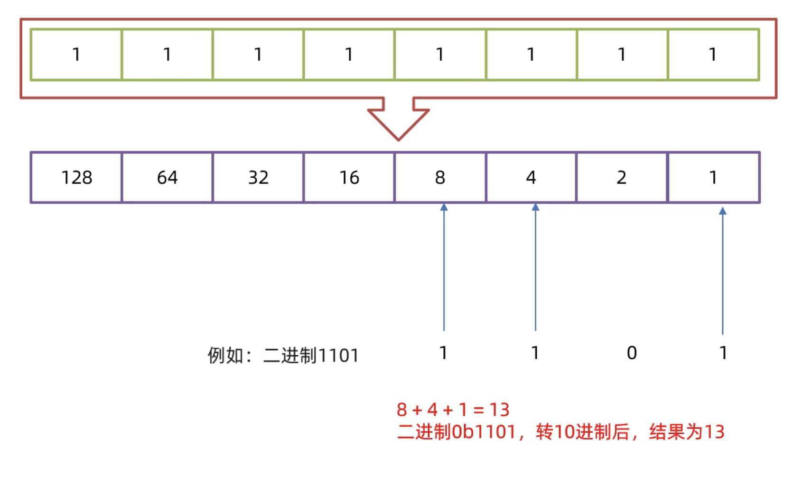
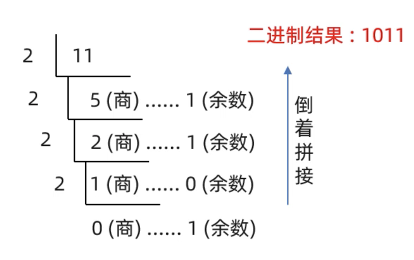

计算机中的数据存储
不同进制在代码中的表现形式
| 进制 | 组成范围 | 代码形式 |
|---|---|---|
| 二进制 | 0、1 | 0b |
| 十进制 | 0-9 | 无 |
| 八进制 | 0-7 | 0 |
| 十六进制 | 0-9，a-f | 0x |
进制转换
任意进制转十进制
公式：系数*基数的权次幂 相加
二进制转十进制
8421快速转换
二进制数每一位从右到左分别看作十进制数：1，2，4，8，16，32…以此类推。
用基数乘以看作的十进制数，并相加。
最终得到的就是二进制数的十进制结果。
例：
有二进制数：
转换过程为：

十进制转其他进制
除基取余法
原数不断除以基数（几进制，基数就是几）得到余数，直到商为0，再将余数倒着拼起来。

计算机的存储规则
文本-Text
-
ASCII码表
ASCII (American Standard Code for Information Interchange)：
美国信息交换标准代码是基于拉丁字母的一套电脑编码系统，主要用于显示现代英语和其他西欧语言。
它是最通用的信息交换标准，并等同于国际标准 ISO/IEC 646。
详情参考以下链接：
ASCII码表 -
GB2312编码
1981年5月1日发布的简体中文汉宇编码国家标准。收录7445个图形字符，其中包括6763个汉宇。 -
BIG5编码
台湾地区繁体中文标准字符集，共收录13053个中文字，1984年实施。 -
GBK编码
2000年3月17日发布，收录21003个汉字，包含国家标准GB13000-1中的全部中日韩汉字，和BIG5编码中的所有汉字。 -
Unicode编码
国际标准字符集，它将世界各种语言的每个字符定义一个唯一的编码，以满足跨语言、跨平台的文本信息转换。
图片-Image
通过每一个像素点中的RGB来存储。
声音-Sound
对声音波形图进行采样后存储。
本博客所有文章除特别声明外，均采用 CC BY-NC-SA 4.0 许可协议。转载请注明来自 蛙梨的宝库！
 微信
微信